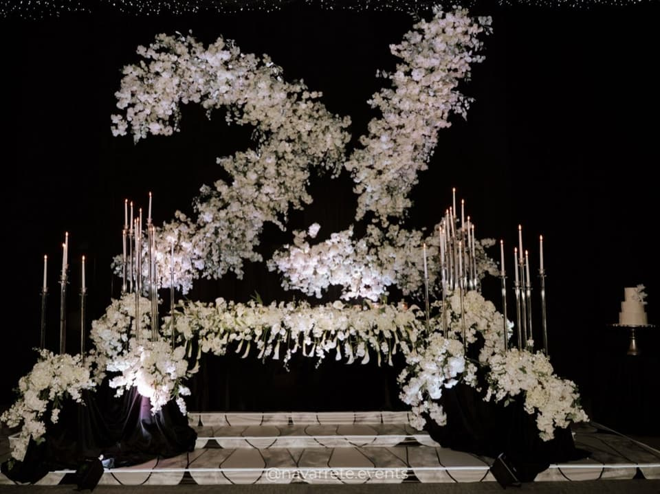

From floor plan to celebration
What happens between the blank canvas and the night itself — layout, build and order.
Journal
An editorial space to think out loud about what we do: materials, atmospheres, processes and the ideas behind each project.

Before flowers or linens, light decides how a room feels. Notes on candles, chandeliers and shadow.

A coffee shop, a racetrack, a city in neon. When the concept begins with the person being celebrated.

The moment a floral installation stops being decoration and begins to shape the space.
Articles marked as editorial drafts are sample texts prepared for the launch of the Journal and are awaiting review by the studio.